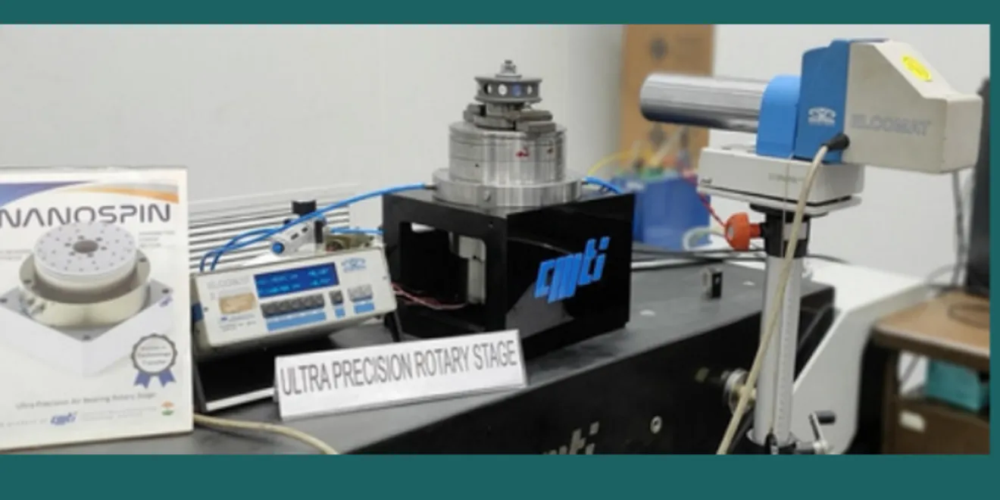
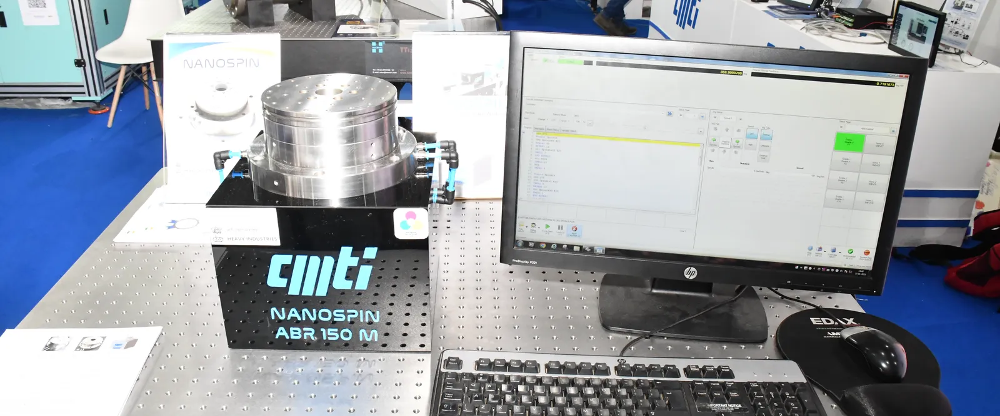

A 150 mm machine-tool spindle that machines and then measures. It turns up to 100 kg on a film of air only microns thick, holds 400 nm running accuracy, positions to ±0.5 arcsecond and test-runs to 3,000 rpm — the same class of precision rotation the market already imports, from an indigenous build that is fundamentally easier and cheaper to make. India-first market; Europe as the extension.
This project is not a new invention. The air-bearing spindle is an established technology the market has bought for decades. What we change is how it is made: the same physics, with the hardest and most expensive part of an orifice-based spindle, the array of precision-drilled orifices, replaced by a porous graphite surface. The surface is the orifice: an easier, cheaper orifice source (the next two pages).
An aerostatic bearing meters a film of air only microns thick between the rotating shaft and the housing. How the air is metered, the restrictor, is what makes these machines hard and expensive to build.
The incumbents agree. Ken Abbott, president of ABTech (the leading maker of heavy metrology tables), named the cost drivers of the category in MD Magazine (Aug 2024): "the amount of labor involved to create the geometry … and the more expensive motors and encoders."
In our design, air is metered through millions of sub-micron pores distributed across the whole bearing surface. The surface itself is the restrictor: metering is a material property of the porous graphite, not a machining operation. There is no orifice to drill, locate or assemble.
Figures: Chin. J. Mech. Eng. (2018, experiment + CFD); Aston University MSc thesis (2019); graphite compressive strength and air-consumption figures per New Way technical data (New Way is a vendor of porous bearings). RML keeps the full citation list.
A motor-driven, porous-graphite, aerostatic rotary stage, built with CMTI. The shaft floats on pressurised air: no contact, no friction, no wear. Every number below is measured for this unit — the speed row is the one exception, and it says so.
| Spec | Value |
|---|---|
| Load capacity (axial) | 100 kg (≈ 981 N — a part up to ~100 kg sits on top) |
| Stiffness | 0.3 N/nm axial · 0.15 N/nm radial |
| Running accuracy | < 400 nm at 500 rpm (the axis wobble per revolution) |
| Positioning | ±0.5 arcsec (1/7200 of a degree — a turn holds 1,296,000 of them; arcseconds are the industry's angle unit for precision rotation) |
| Step / repeatability | 0.25 arcsec / < 0.3 arcsec |
| Speed | test-run to 3,000 rpm; drive motor and servo drive rated to 12,000 rpm |
| Machining | aluminium turned to Ra ≈ 10 nm — CMTI's published trial (1,000 rpm, 10,000 nm depth of cut, 5 mm/min feed) |
| Characterized | CMTI metrology lab — autocollimator + polygon mirror, per CMTI's published specification (Jan 2025) (PDF, new tab) |
Build cost ≈ ₹12 L per unit (RML actuals — the BOM is near the end of this brief). This brief sells what is measured: the machine as it exists, characterized in a national lab.
Most of the 150 mm field is measuring instruments: they rotate a part, probe it, and print a number. They do not cut.
This is a spindle. It machines, turning, micro-drilling, diamond-turning finishing on heavy parts, and then it measures, roundness and TIR, flatness, indexed inspection, on the same stage without re-fixturing. The part sits directly on the stage (up to 100 kg, no lifting fixture) and comes off finished and verified.
In metrology the winning metrics are not rpm: they are load, stiffness, stability and arcsecond indexing, and in the 100 kg class all of them are on this axis. The 3,000 rpm test-run speed matters when it cuts: high-speed finishing passes at a load where the incumbents stop at 120–800 rpm.
That cutting claim is a published number now, not ours alone: CMTI ran the ABR-150M as the main spindle of its ultra-precision diamond-turning machine — aerostatic slides, vibration-isolated granite bed — turning aluminium at 1,000 rpm, 10,000 nm depth of cut, 5 mm/min feed, to a measured surface roughness of Ra ≈ 10 nm (CMTI's trial, PDF, new tab).
Who we replace in the same body size (specs from each vendor's own datasheets, Oct 2026; all three sell on quote):
The comparison is direct where it matters: 12× the load in the same size as Aerotech's 150 mm; 25× the speed of New Way's same-technology unit; 5–8× the speed of PI's, with the stiffer axis. All four incumbents sell on quote — the next two pages show what the market actually pays.
A roundness machine is a frame, a probe, and a rotary element. The rotary element is exactly this product: a high-accuracy, heavy-load, arcsecond-indexed aerostatic rotary axis. The builders of compact roundness machines are therefore buyers, not rivals.
A compact roundness machine sells in India for ₹30 L–1.2 Cr (MMQ-200, current listing) — that is the whole system, not the rotary element. The axis is a fraction of that system price, and the builders are the buyers.
The majors sell on quote, so the price evidence is public list prices and tender records, verified on the day (3 Oct 2026):
Why each fits: 100 kg direct load without lifting fixtures, 0.3 N/nm under probe or cutting force, ±0.5″ indexed checks, dry operation — and for NPL, to our knowledge the only indigenous arcsecond-class 100 kg rotation — an import substitute for a reference chain.
Positioning. The same class of precision rotation the market already buys — from an indigenous source, at a build cost the incumbents' structure cannot match, with heavy load and stiffness they only reach in bigger, costlier packages. We win on load + stiffness + speed + price + indigenous.
Lead market: India's import substitution. In FY2024-25 India's machine-tool imports were ₹18,686 Cr against domestic production of ₹14,566 Cr and total consumption of ₹31,781 Cr — imports were 59% of consumption (IMTMA, FY2024-25). Precision air-bearing stages and spindles sit on the imported side; even the US imports this class (the Argonne approval). Europe as the extension — the partner's own network: NMI calibration (PTB, VTT MIKES) and the EU metrology/beamline scene.
CMTI's role. Joint-IP partner; built the first unit with us; owns the metrology lab that characterized it (autocollimator + polygon mirror); national-lab network (ISRO, DRDO, science labs); holds an orifice-based ultra-precision line in the same precision class; publicly offers the air-bearing rotary table technology to industry for mass commercialisation (CMTI, The Science of Making, Jan 2025 — linked on the spec page). The asset for us: credibility, characterization capability, and a national-lab channel.
Economics (INR, indicative). Prototype build ₹12 L (actual BOM, near the end of this brief). At a ~₹25 L price: 52% gross margin at today's cost. Two levers: hold price against the quote-based incumbents, or price below the landed import cost of the same class — any price at or above ₹24 L keeps the margin at 50%+. Few units a year, high margin: a specialty engineering business, not a volume play.

We are seeking an operating partner — not a funding round, not an IP sale. The IP is jointly held with CMTI and the Ministry of Heavy Industries; RML holds the exclusive commercialization rights (through Dec 2029) and a stake (equity / royalties); the partner runs commercialization — build, sales, service; RML remains the technology owner. This brief tests fit.
If there is interest, the next step is a focused conversation and a technical package (drawings + test data) under NDA — starting with the four competitor quotes that set the price line.

Prototype build cost, per unit (RML actuals):
| Item | Type | Cost (₹) |
|---|---|---|
| Porous-graphite sleeve (New Way) | imported | 1,50,000 |
| Direct-drive motor | imported | 2,50,000 |
| Servo controller | imported | 2,00,000 |
| Optical encoder, arcsecond-class (Renishaw) | imported | 2,50,000 |
| Raw materials | — | 1,00,000 |
| Machining | — | 60,000 |
| Parts subtotal | 10,10,000 | |
| Overheads (≈ 19%) | 1,90,000 | |
| Build cost per unit | ≈ 12,00,000 (₹12 L) |
The imported items are standard, available components — nothing exotic. The machine is an integration of proven parts, built and characterized in India.